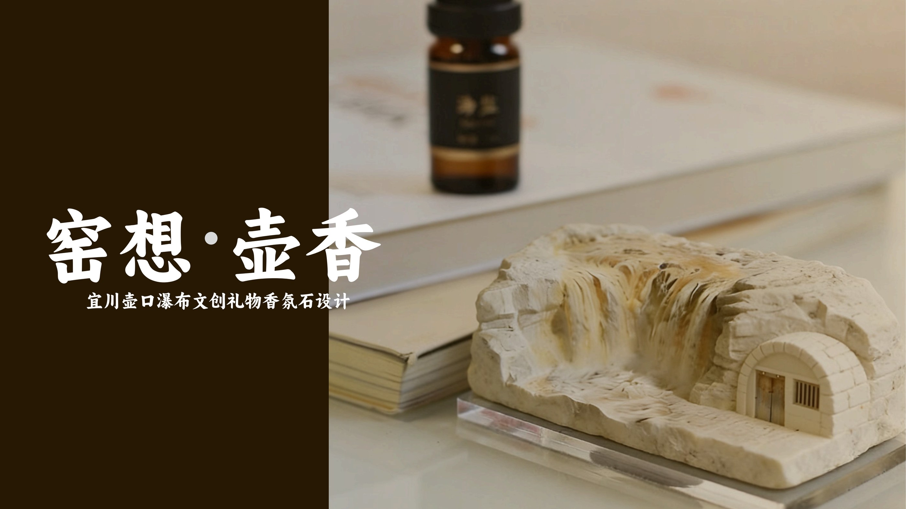

01 / LIQUOR SERIES
宜川稠酒系列
从便携与礼赠场景出发，探索稠酒产品包装、酒具与使用体验。

一个从遗址出发，让古堡信息被看见、被理解；一个从地方文化出发，让资源进入当代产品与日常体验。
项目围绕庄浪县古城堡展开。我参与各阶段设计工作，从现场资料梳理、数字采集，到信息可视化与展览表达。
我的参与 / 参与项目各阶段设计工作结合地形、聚落、历史与建筑形制，梳理古堡与地方生活之间的联系。
组合无人机影像、地面扫描与现场校核，建立后续建模所需的数据。
将点云、三维模型与历史资料组织成可视化内容，帮助观众理解古堡。
参与展墙视觉与展览内容设计，把数字记录转化为现场可阅读的体验。
作为项目负责人，我全程参与宜川项目各阶段：从文献与实地调研，到文化资源数据库，再到产品方案设计。
项目角色 / 项目负责人 · 全程参与
从便携与礼赠场景出发，探索稠酒产品包装、酒具与使用体验。

以地方物产与果香为线索，设计可随身携带的香片挂件。

将地方红色记忆转化为可携带、可分享的纪念设计。

工业设计工程硕士研究生 · 文化创意与用户体验设计
从用户与文化调研出发，梳理问题、定义体验，再把判断落实为产品与视觉方案。关注设计如何回应真实场景，并让地方文化更容易被理解和使用。
查看完整个人简介 ↗